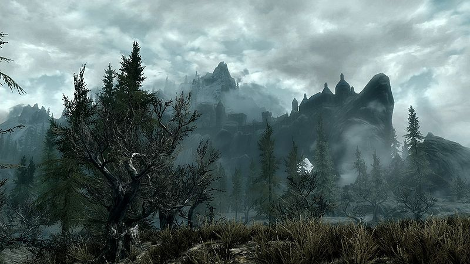

𖤓Hey, you. You're finally awake.𖤓
A Study of Skyrim by Bethesda: the Roles of Sounds and Images in the Game

In this site I want to explore the use of audio in Bethesda's Skyrim composed by Jeremy Soule
𖤓Game Play𖤓
𖤓 Secunda 𖤓
The first audio example I have chosen is Secunda, this piece plays exclusively at night while in the open world.:
descripe audio example
in Secunda(note 1).
..
𖤓 Caught Off Guard 𖤓
........
The second example I have chosen is Caught Off Guard. When the player character is ambushed by a enemy, this track plays.
(note 1): author title rest of cite
(note 2): source
(note 3): source